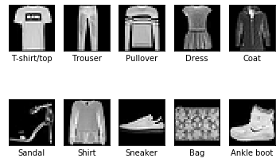
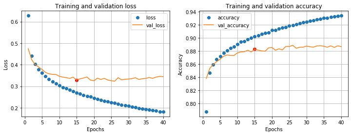
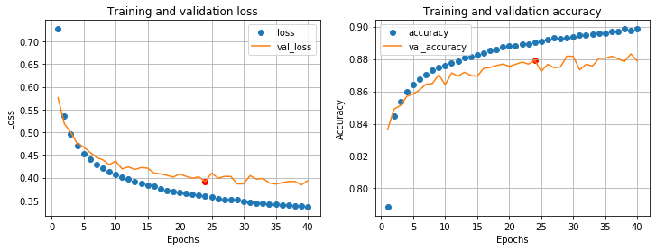
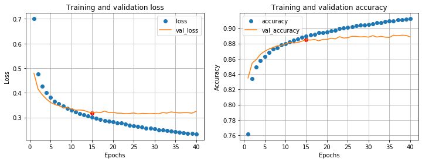
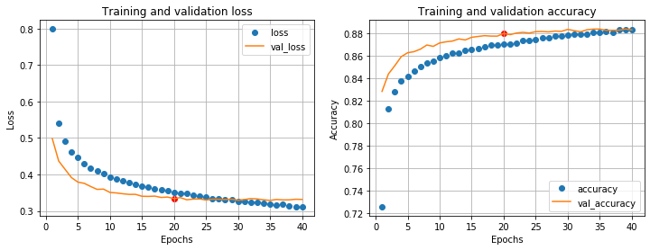
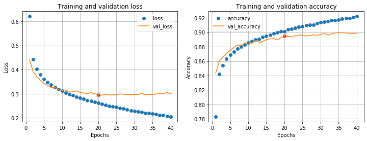
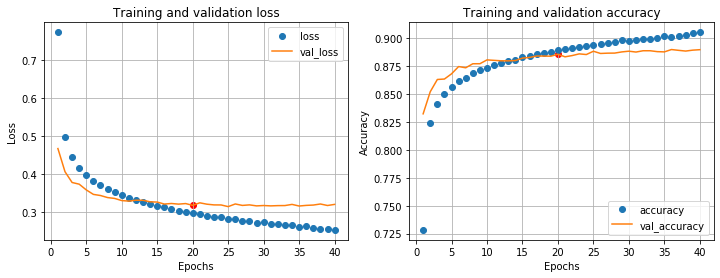
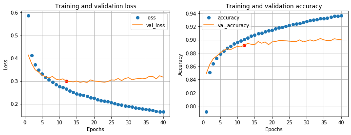
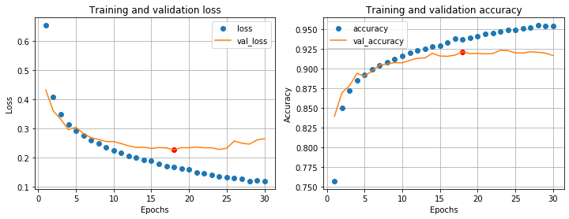

所有代码可以在我的Github上下载，也可以直接在 Google Colab 中打开
本节内容
- 密集神经网络 DNN(Deep neural network)
- K折交叉验证 K-fold cross-validation
- 手动的超参数优化
- 一些防止过拟合的方法：
- L2 正则化 (L2 regularization)
- Dropout
- （虚假的） Early stopping
相关文档：
在 Google Colab 中运行，需要将 TensorFlow 版本设置为2.0:
1 | import sys |
1 | from distutils.version import StrictVersion |
1. 导入数据集
1 | (train_images, train_labels), (test_images, test_labels) = keras.datasets.fashion_mnist.load_data() |
数据以 NumPy 数组的形式保存。
训练集 train_images 共有 60000 个图像，测试集 test_images 共有10000个图像，图像为 28 * 28 像素的灰度图。
1 | print('The type of train_images is', type(train_images)) |
The type of train_images is <class 'numpy.ndarray'>
The type of train_labels is <class 'numpy.ndarray'>
train_images.shape = (60000, 28, 28)
train_labels.shape = (60000,)
test_images.shape = (10000, 28, 28)
test_labels.shape = (10000,)其中每个图像的标签是范围在 0～9 的整数，以 NumPy 数组保存。为了方便，定义一个字典 labels_dict 以查找标签对应的衣服类型。
1 | train_labels |
array([9, 0, 0, ... , 3, 0, 5], dtype=uint8)1 | labels_dict = { 0: 'T-shirt/top', 1: 'Trouser', 2: 'Pullover', 3: 'Dress', 4: 'Coat', 5: 'Sandal', 6: 'Shirt', 7: 'Sneaker', 8: 'Bag', 9: 'Ankle boot'} |
对每个类别，找到一个图像作可视化：
1 | nrows = 2 |

2. 数据集预处理
因为数据已经是张量的形式，所以无需再次数据张量化。
为了方便训练神经网络，使用数据归一化 (Normalization)：
1 | train_images = train_images.astype('float32') / 255 |
3. 构建并评估模型
3.1 基于常识的简单基准方法
一个基于常识的简单基准方法是随机数：这样的准确率是1/10，即10%。
3.2 密集连接网络
3.2.1 第一个模型
输入层：因为每个图像都是二维张量的形式，进入
Dense层之前需要将数据展平为一维张量（向量）的形式。可以使用两种方法：- 使用
Flatten层
- 使用
numpy.ndarray.reshape()方法预处理数据
这里使用第一种方法。
- 使用
中间层： 一个或两个
Dense层，使用relu函数激活。
输出层：输出10个概率，对应10个类别，概率总和为1。所以最后一层是10路由
softmax函数激活的Dense层。
优化器：adam（Adaptive Moment Estimation) 似乎是当前最先进的优化器。
损失函数：由于目标是整数标量编码，所以使用 sparse_categorical_crossentropy。 与categorical_crossentropy的区别
评估标准：本例只关心精度，即正确分类的图像所占的比例。
1 | from tensorflow.keras import layers |
由于测试集只有60000个，为了避免样本噪声 (sampling noise)，使用K折交叉验证 (K-fold cross validation)
1 | def k_fold_val(k, data, labels, |
为了方便训练结果的可视化，定义函数 visualize() ，它同时包含了通过 val_loss 的变化判断过拟合的功能。（为什么？）
1 | def visualize(histories): |
先使用一层中间层，隐藏单元64个。训练40次
1 | k = 5 |
Iteration: 1 / 5
Iteration: 2 / 5
Iteration: 3 / 5
Iteration: 4 / 5
Iteration: 5 / 5
Overfitting warning at epoch 15, val_loss: 0.329, val_accuracy: 0.883
从第15轮后开始， val_loss 不再下降，模型过拟合。这个模型在验证集上的最终精度是88.3%，精确度能不能再提高？
3.2.2 使用正则化降低拟合速度
增加L2正则化。
1 | visualize(k_fold_val(k, train_images, train_labels, middle_units_1=64, regularizer_1=keras.regularizers.l2(0.001), epochs=40)) |
Iteration: 1 / 5
Iteration: 2 / 5
Iteration: 3 / 5
Iteration: 4 / 5
Iteration: 5 / 5
Overfitting warning at epoch 24, val_loss: 0.391, val_accuracy: 0.879
可以看到模型在第24轮后过拟合。过拟合明显变慢。在验证集上的精度是87.9%
再试试使用 Dropout 正则化, Dropout 比率0.2：
1 | visualize(k_fold_val(k, train_images, train_labels, middle_units_1=64, dropout_1=0.2, epochs=40)) |
Iteration: 1 / 5
Iteration: 2 / 5
Iteration: 3 / 5
Iteration: 4 / 5
Iteration: 5 / 5
Overfitting warning at epoch 15, val_loss: 0.319, val_accuracy: 0.885
模型在第15轮后过拟合，过拟合速度并没有减慢。是因为 dropout 比率太小的原因吗？把 Dropout 比率提高到0.4:
1 | visualize(k_fold_val(k, train_images, train_labels, middle_units_1=64, dropout_1=0.4, epochs=40)) |
Iteration: 1 / 5
Iteration: 2 / 5
Iteration: 3 / 5
Iteration: 4 / 5
Iteration: 5 / 5
Overfitting warning at epoch 20, val_loss: 0.334, val_accuracy: 0.880
模型过拟合的速度慢了，可是验证集精度没有上升。
小结：
- L2 正则化和 Dropout 都可以减慢拟合速度。参数越大，拟合越慢。
- L2 正则化和 Dropout 都没有带来更好的精度。原因可能是神经网络太小，需要增加神经网络隐藏单元或者层数。
- 使用 Dropout 后，开始阶段验证集的精度比训练集好，这是因为只有在训练集上 Dropout 层起作用，在验证集上不经过 Dropout 层。
3.2.3 调节神经网络大小
在上面的例子中，精度仍然不够高。尝试增加一些隐藏单元到256个，同时保留 Dropout 层。
1 | visualize(k_fold_val(k, train_images, train_labels, middle_units_1=256, dropout_1=0.4, epochs=40)) |
Iteration: 1 / 5
Iteration: 2 / 5
Iteration: 3 / 5
Iteration: 4 / 5
Iteration: 5 / 5
Overfitting warning at epoch 20, val_loss: 0.295, val_accuracy: 0.895
在验证集上的精度为89.5%，4倍的隐藏单元只带来了 1% 精度的提升。效果并不好。
再试试如果只增加一层中间层：
1 | visualize(k_fold_val(k, train_images, train_labels, middle_units_1=64, dropout_1=0.2, middle_units_2=64, dropout_2=0.2, epochs=40)) |
Iteration: 1 / 5
Iteration: 2 / 5
Iteration: 3 / 5
Iteration: 4 / 5
Iteration: 5 / 5
Overfitting warning at epoch 20, val_loss: 0.318, val_accuracy: 0.886
效果也不好。两层各256个单元试试：
1 | visualize(k_fold_val(k, train_images, train_labels, middle_units_1=256, dropout_1=0.2, middle_units_2=256, dropout_2=0.2, epochs=40)) |
Iteration: 1 / 5
Iteration: 2 / 5
Iteration: 3 / 5
Iteration: 4 / 5
Iteration: 5 / 5
Overfitting warning at epoch 12, val_loss: 0.299, val_accuracy: 0.892
3.2.4 小结
| 编号 | 模型（中间层） | 验证集精度 |
|---|---|---|
| 1 | dense(64) | 88.3% |
| 2 | dense(64) with L2 | 87.9% |
| 3 | dense(64) with Dropout | 88.5% |
| 4 | dense(256) with Dropout | 89.5% |
| 5 | dense(64)-dense(64) with Dropout | 88.6% |
| 6 | dense(256)-dense(256) with Dropout | 89.2% |
无论怎样增大神经网络，验证集的精度都不会超过90%。选择表现最好的模型4在测试集上测试。
1 | model = build_model(256, dropout_1=0.4, summary=True) |
Model: "sequential_35"
_________________________________________________________________
Layer (type) Output Shape Param #
=================================================================
flatten_35 (Flatten) (None, 784) 0
_________________________________________________________________
dense_80 (Dense) (None, 256) 200960
_________________________________________________________________
dropout_35 (Dropout) (None, 256) 0
_________________________________________________________________
dense_81 (Dense) (None, 10) 2570
=================================================================
Total params: 203,530
Trainable params: 203,530
Non-trainable params: 0
_________________________________________________________________
10000/10000 [==============================] - 1s 66us/sample - loss: 0.3279 - accuracy: 0.8864
[0.3279034249544144, 0.8864]在测试集上的精度 88.6% 和之前在交叉验证中的精确度 89.5% 相近。模型没有在交叉验证的验证集上过拟合。
3.3 第二类模型：卷积神经网络
对于计算机视觉问题，通常卷积神经网络会有更好的效果。
2D卷积层 Conv2D 的输入是一个四维张量： (batch, rows, cols, channels) ，所以需要将图像数据拓展一个维度。
1 | train_images = np.expand_dims(train_images, axis=3) |
这里只试验一个模型，不再调节超参数。(所以不需要分割出验证集，这里直接把测试集当作验证集了。）
另外由于卷积网络的训练较为耗时，进行k折交叉验证还会增加k倍计算量，所以不进行交叉验证。
1 | model = models.Sequential() |
Model: "sequential_37"
_________________________________________________________________
Layer (type) Output Shape Param #
=================================================================
conv2d_3 (Conv2D) (None, 26, 26, 32) 320
_________________________________________________________________
max_pooling2d_2 (MaxPooling2 (None, 13, 13, 32) 0
_________________________________________________________________
conv2d_4 (Conv2D) (None, 11, 11, 64) 18496
_________________________________________________________________
max_pooling2d_3 (MaxPooling2 (None, 5, 5, 64) 0
_________________________________________________________________
conv2d_5 (Conv2D) (None, 3, 3, 64) 36928
_________________________________________________________________
flatten_37 (Flatten) (None, 576) 0
_________________________________________________________________
dropout_37 (Dropout) (None, 576) 0
_________________________________________________________________
dense_84 (Dense) (None, 64) 36928
_________________________________________________________________
dense_85 (Dense) (None, 10) 650
=================================================================
Total params: 93,322
Trainable params: 93,322
Non-trainable params: 0
_________________________________________________________________
Overfitting warning at epoch 18, val_loss: 0.227, val_accuracy: 0.921
这个卷积神经网络的精度为92.1%，已经显著高于任何一个使用过的密集神经网络的例子。
4. 总结
- 在这个实践中没有考虑优化器、学习率和激活函数对神经网络造成的影响。
- 通过正则化防止过拟合的方法在没有很快过拟合的神经网络上（似乎）并不能提高模型的性能。此时模型的性能瓶颈（可能）在模型架构、模型大小以及数据的特征提取上。
- 验证集上的 loss 函数在接下来的几个 epoch 上不再减小 是判断是否过拟合的一个很好的方式。
- 在计算机视觉问题上，卷积网络要比密集网络效果好。
- 调节超参数耗时耗力，应当考虑搭配其他的机器学习库完成自动调整超参数。
这里引用 《Deep Learning with Python》(Francois_Chollet)中文版的一段话：
整天调节超参数不应该是人类的工作，最好留给机器去做。
超参数优化的过程[…]的关键在于，给定许多组超参数，使用验证性能的历史来选择下一组需要评估的超参数的算法。有多种不同的技术可供选择: 贝叶斯优化、遗传算法、简单随机搜索等。
这些挑战非常困难，而这个领域还很年轻，因此我们目前只能使用非常有限的工具来优化模型。通常情况下，随机搜索(随机选择需要评估的超参数，并重复这一过程)就是最好的 解决方案，虽然这也是最简单的解决方案。但我发现有一种工具确实比随机搜索更好，它就是 Hyperopt。它是一个用于超参数优化的Python 库，其内部使用 Parzen 估计器的树来预测哪组超 参数可能会得到好的结果。另一个叫作 Hyperas 的库将 Hyperopt 与 Keras 模型集成在一起。一定要试试。
- 机器学习太费 GPU 了，这个 notebook 在 Google Colab 上大概要跑20分钟左右才能跑完。。但是又没有钱买 2080Ti，下次白嫖 kaggle 的 GPU 试试。